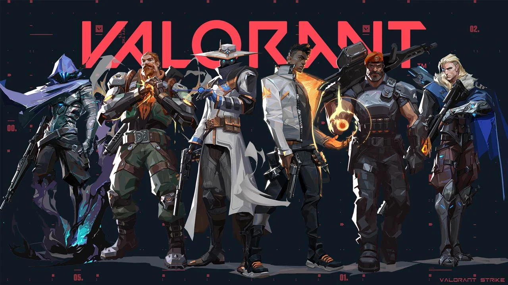

Agents
Select an Agent

Abilities
Duelists
Jett: Agile and quick, uses wind to her advantage with abilities to dash and jump.
Phoenix: Uses fire-based abilities to heal himself and damage enemies.
Raze: High explosive damage with grenades, rockets, and a robot that tracks enemies.
Reyna: Gains health and invisibility by consuming soul orbs from fallen enemies.
Yoru: Uses deception and stealth to outmaneuver opponents with teleportation and invisibility.
Controllers
Brimstone: Tactical with smokescreens, incendiary grenades, and orbital strikes.
Viper: Controls areas with toxic gas and poison clouds.
Omen: Uses shadows to blind, teleport, and deceive enemies.
Astra: Cosmic abilities to manipulate battlefields with stars that grant smokes, stuns, and gravity
wells.
Harbor: Water-based abilities that create barriers and push enemies back.
Initiators
Breach: Heavy crowd control with abilities that stun and disorient enemies through walls.
Sova: Hunter who uses recon drones and arrows to locate and eliminate enemies.
Skye: Uses nature-themed abilities to heal allies and reveal enemies.
KAY/O: Robot who can suppress enemy abilities and flash or frag with grenades.
Fade: Utilizes darkness to trap, track, and terrify enemies with shadow-like abilities.
Sentinels
Sage: Healer who can revive teammates, slow enemies, and block paths with walls.
Cypher: Information gatherer who uses cameras, traps, and wires to control the battlefield.
Killjoy: Engineer who uses turrets, grenades, and lockdown devices to control the map.
Chamber: Deadly marksman with teleportation and powerful weapons to secure areas.